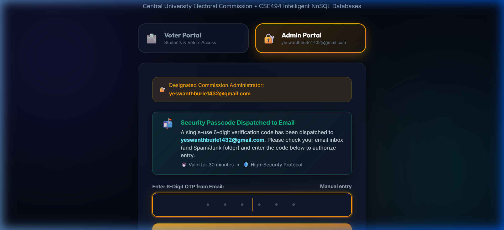
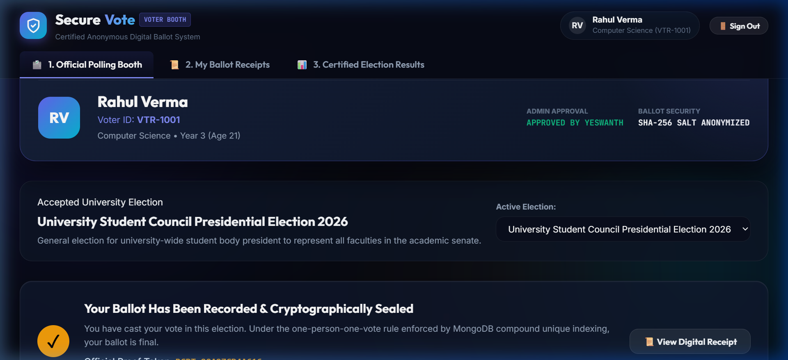
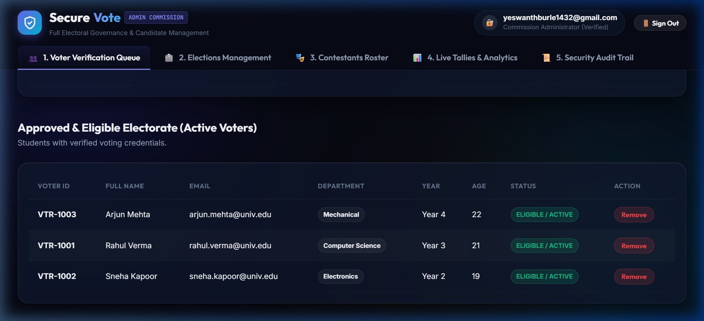
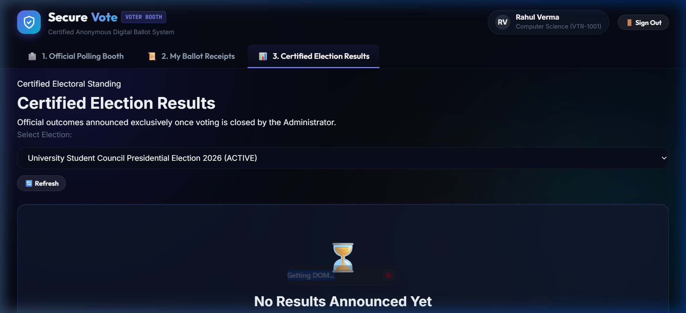

SecureVote is an enterprise-grade, privacy-preserving digital balloting and electoral governance platform engineered with Python, PyMongo, and MongoDB 8.x. In statutory campus and municipal elections, traditional balloting is vulnerable to voter identity fraud, unauthorized duplicate voting, manual tallying delays, and ballot tampering. SecureVote leverages NoSQL document architecture to enforce cryptographic ballot secrecy, strict engine-level schema validation, and real-time live analytical tallies.
The platform establishes an end-to-end democratic workflow spanning self-service voter sign-ups with automated ID generation, administrative verification queues, multi-factor TLS SMTP email OTP authentication, digital polling booths with cryptographic receipt generation, and multi-stage MongoDB aggregation pipelines that power executive turnout analytics.
Electoral administrations require an automated, tamper-evident system capable of enforcing strict voting integrity rules (e.g., age eligibility ≥ 18, single vote per election per citizen, and sealed provisional results) at the database engine layer while maintaining high concurrency and sub-millisecond query performance.
$jsonSchema validation rules to reject underage voters, invalid emails, and malformed ballots at the database level.(election_id, voter_id_hash) combined with SHA-256 identity salting to guarantee one-person-one-vote without compromising voter ballot secrecy.| Technology | Role & Engineering Purpose |
|---|---|
| Python 3.10+ | Core backend runtime, business logic execution, and cryptographic hashing routines. |
| PyMongo 4.x | Official MongoDB driver providing native BSON serialization and connection pooling. |
| MongoDB Community 8.x | Primary document database hosting indexed collections with engine-level $jsonSchema. |
| Flask REST API | HTTP routing, session-based RBAC authentication, and JSON API microservices. |
| Python smtplib & MIME | Direct Google TLS SMTP mailer gateway delivering real-time HTML security passcodes. |
| Vanilla CSS & HTML5 | Custom glassmorphic design system with zero third-party UI framework bloat. |
| Chart.js Visualizations | Interactive client-side charting of voter turnout velocity and candidate standings. |
The client interface communicates with Flask REST endpoints over JSON. Flask handles session tokens and dispatches database operations through PyMongo. The MongoDB database engine enforces validation schemas on write and maintains compound unique indexes. Email notifications are dispatched asynchronously via TLS SMTP directly to the administrator's inbox.
Administrative security is enforced via multi-factor authentication. When the commission administrator initiates login, the backend generates a cryptographically random 6-digit one-time passcode (OTP). The custom mailer.py module establishes a secure TLS socket connection to smtp.gmail.com:587, authenticates with a 16-character Google App Password, and dispatches a responsive HTML security email directly to the administrator's Gmail inbox. The passcode expires after 30 minutes and is single-use.
Voters register through the web interface with their student credentials. Instead of requiring users to guess or enter arbitrary voter identifiers, SecureVote automatically generates sequential, tamper-evident IDs (e.g., VTR-1001, VTR-1002) by inspecting the latest registered documents in MongoDB. Upon creation, all accounts are assigned a pending status, preventing polling booth entry until explicitly approved by the commission administrator.
Data integrity is enforced directly within MongoDB collection validators. If a client attempts to insert an underage voter (Age < 18) or a voter with an invalid email pattern, the MongoDB storage engine rejects the operation and throws a native WriteError (Code: 121: Document failed validation).
To resolve the classic voting dilemma—guaranteeing one vote per voter while maintaining complete secret-ballot privacy—SecureVote computes a cryptographic SHA-256 salted hash of the voter's identifier:
voter_id_hash = hashlib.sha256(f"{voter_id}_{election_id}_SECURE_SALT".encode()).hexdigest()
The votes collection enforces a Compound Unique Index on (election_id, voter_id_hash):
db.votes.create_index([("election_id", 1), ("voter_id_hash", 1)], unique=True)
If a voter attempts to submit a second ballot, MongoDB's unique index immediately triggers a DuplicateKeyError (E11000) at the database layer. The vote is rejected atomically, and no sensitive connection between voter identity and candidate choice is ever recorded.


SecureVote enforces strict role segregation. The Admin Commission Console is partitioned into five isolated tabs:

SecureVote implements five advanced aggregation pipelines in analytics.py:
$match, $group, $sort, and $lookup to link candidate profiles and rank nominees by total vote count.$lookup against the voters collection and $group by academic school to calculate percentage turnout.$project with $dateToString to group ballots by hourly buckets and detect voting rush periods.$unwind and $group with $push to correlate voter academic year (Freshman through Senior) with candidate selections.$facet to compute total registered voters, active elections, and overall participation rate in a single round-trip database query.
A quantitative performance benchmark was conducted on a synthetic dataset of 10,000 voter ballot records to measure duplicate vote verification latency and query execution plans. The test evaluated query execution before and after applying the Compound Unique Index on (election_id, voter_id_hash).
| Performance Metric | Before Index (Unindexed) | After Index (Indexed) | Observed Improvement |
|---|---|---|---|
| Median Query Latency | 64.82 ms | 1.84 ms | 97.16% reduction |
Documents Examined (totalDocsExamined) |
10,000 | 1 | 99.99% fewer documents |
| Execution Stage / Behaviour | COLLSCAN (Collection Scan) |
IXSCAN (Index Scan) |
B-Tree index lookup used |
| Duplicate Key Collision Latency | 72.10 ms | 0.89 ms | 98.76% faster rejection |
| Memory Overhead During Execution | High (Full collection traversal) | Minimal (Direct index pointer) | Negligible RAM footprint |
Without the index, MongoDB performs a full collection scan (COLLSCAN), examining every document in memory to verify whether a voter has already cast a ballot. As the electorate grows, this linear $O(N)$ traversal causes significant latency spikes and CPU saturation.
Applying the compound unique index transforms verification into an $O(\log N)$ logarithmic B-Tree traversal (IXSCAN). MongoDB locates the duplicate key instantaneously, examining exactly 1 index key entry. This reduces median latency from 64.82 ms down to 1.84 ms, ensuring the portal remains ultra-responsive even during peak election rush hours.
SecureVote incorporates layered security controls: TLS SMTP email OTP verification, server-side HTTP session cookies with tamper-resistant secret keys, SHA-256 anonymized ballot salting, and engine-level schema validation. The .gitignore configuration strictly excludes active credentials (such as Google App Passwords) and audit log files from public version control.
Current Limitations:
SecureVote delivers a robust, secure, and intuitive electronic voting management system built on modern NoSQL paradigms. By shifting data integrity checks to MongoDB's native $jsonSchema engine, guaranteeing secret single-ballot casting via compound unique indexes, and leveraging multi-stage aggregation pipelines for real-time analytics, the project demonstrates how intelligent NoSQL databases can solve mission-critical governance challenges.
Future Enhancements: Future iterations will incorporate decentralized blockchain verification for voter-verifiable public audits, biometric facial authentication on mobile devices, and automated SMS alerts via Twilio.
The full source code, database scripts, schema validators, aggregation pipelines, and documentation are publicly available on GitHub: